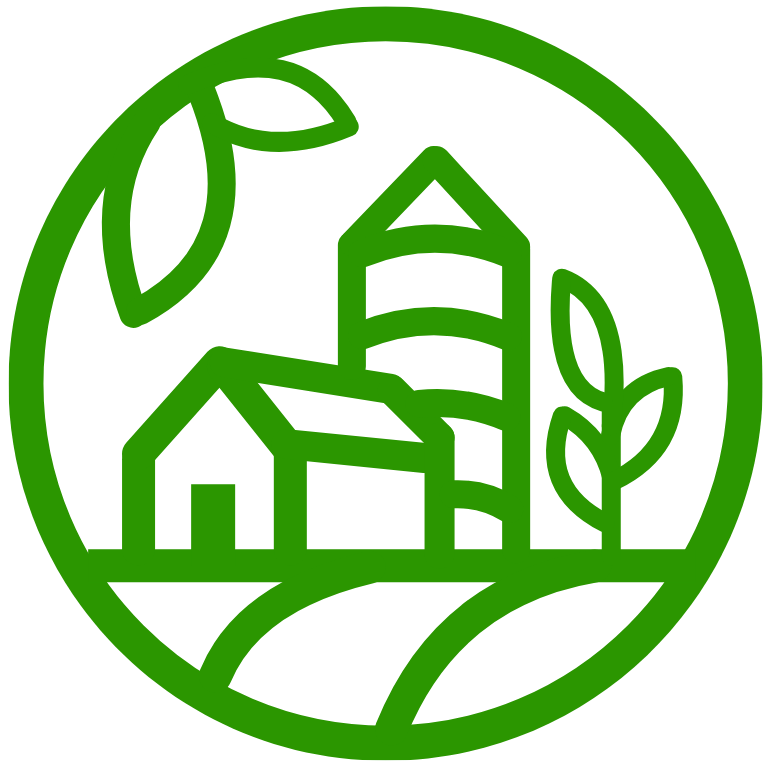

Página Principal
Silos de Soja
Funcionários
Relatório
SAIR

Monitoramento dos Silos
Silos Próximos da Capacidade Máxima
0
Capacidade Total Disponível nos Silos
0t
Total de Toneladas Armazenada nos Silos
0t
Total de Alertas Graves Emitidos no Último Mês
9
Nível de grãos de soja no silo durante os últimos 7 dias
Silo 1
Silo 2
Silo 3
Silo 4
Silo 5
Silo 6
Nível em metros de grãos de soja em cada silo
Alertas
Silo 4 próximo do limite!
22/04/2025 16:45
Silo 6 próximo do limite!
20/04/2025 20:35
Silo 1 próximo do limite!
12/04/2025 01:05
Silo 6 próximo do limite!
04/04/2025 14:40
Silo 3 próximo do limite!
03/04/2025 19:20